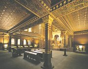

Apokryfy
Nìkteré texty nebyly do koneèné redakce Bible zahrnuty nebo se liší v rùznıch kanonickıch verzích Bible podle vyznání. idé jim øíkají knihy deuterokanonické, pravoslavní køesané nekanonické a protestanti apokryfní. Jde o rozšíøení knih (Ester, Kniha Bárukova, Daniel) i celé knihy katolické Bible (Tóbijáš, Júdit, První a Druhá kniha Makabejská, Kniha Moudrosti, Kniha Sírachovcova (Ecclesiasticus)) pùvodnì pøidané do Septuaginty, øeckého pøekladu Tenaku. Také sem mùeme zaøadit mimobiblické spisy idovské (Aristeas, Henoch, Sybilliny vìštby...) i køesanské (Tomášovo evangelium, Protoevangelium Jakubovo, Pseudo-Tomášovo evangelium dìtství, Arabské evangelium dìtství, Nikodémovo evangelium (Akta Pilátova) atd.). Nìkteré apokryfní texty vznikly a na konci 1. tisíciletí po Kristu.
|
BIBLE
Bible je nejen posvátnım textem køesanù, ale také základním textem køesanské civilizace. Bez znalosti Knihy knih nebo Písma svatého, jak bıvá Bible rovnì nazıvána, neporozumíme ani køesanskému náboenství, ani celé øadì umìleckıch dìl a nepochopíme dùleité motivy v pozdìjších literárních textech. Biblické knihy nevznikaly v Evropì, ale na území obıvaném idy (Palestina). Urèité motivy byly pøevzaty z literatur Mezopotámie a Egypta. Autory jednotlivıch pøíbìhù neznáme, nìkteré biblické knihy jsou pøipisovány konkrétním osobám (Davidovi almy, Šalomounovi Píseò písní). Vìøící jsou pøesvìdèeni, e pùvodcem biblickıch textù je Bùh.
Starı a Novı zákon
Køesanská Bible se skládá ze dvou hlavních èástí – Starého a Nového zákona (pøesnìjší vıraz je smlouva, ne zákon). idovské náboenství ale Novı zákon neuznává a místo názvu Starı zákon pouívá zkratku Tenak nebo Tanach – podle poèáteèních písmen jeho tøí èástí (Tóra, Neví'ím, Ketúvím – Zákon, Proroci, Spisy). Texty Tenaku a Starého zákona se shodují, jsou pouze jinak rozdìleny. Starı zákon vznikal postupnì od 9. do 5. stol. pø.n.l. a je psán hebrejsky (s pasáemi v aramejštinì). Jednotlivé knihy byly nejprve tradovány ústnì a posléze postupnì zapisovány. V dobì babylonského zajetí, kdy se ocitli idé na samé hranici existence, došlo k sjednocení celého uèení. Autorem koneèné redakce z roku 444 pø.n.l. byl Ezdráš. Starı zákon tvoøí Pìt knih Mojíšovıch (Pentateuch), Historické knihy, Knihy básnické a mudroslovné a Prorocké knihy. Novı zákon je mnohem kratší, vznikl v prùbìhu prvních dvou staletí po Kristu, je psán øecky (pøestoe Jeíš mluvil aramejsky) a tvoøí ho 4 evangelia, Skutky apoštolské, Listy (Epištoly) a Zjevení Janovo (Apokalypsa).
Velmi dobrou orientaci v Bibli umoòuje jednotnı systém dìlení na knihy, kapitoly a verše, kterı pochází z 13. stol. Napø. údaj Mt 27,45-56 znamená, e si máme nalistovat knihu Matouš, kapitolu 27, verše 45 a 56 (tato èást Nového zákona pojednává o Jeíšovì smrti).
|
Historie
idovské kmeny zaèaly pronikat z Arabského poloostrova do Palestiny ve 14. stol. pø.n.l. Hlavním mìstem izraelského království (1000–926 pø.n.l.) byl Jeruzalém. Odtud vládli první králové Saul, David a Šalomoun, po jeho smrti se království rozpadá na severní Izrael a jiní Judsko. Izrael dobyli v roce 722 pø.n.l. Asyøané a Judsko roku 578 pø.n.l. Babyloòané. Jejich panovník Nabukadnesar II. dal znièit Jeruzalém a odvedl idy u podruhé do zajetí (babylonská zajetí 598-538 pø.n.l.). Po dobytí Babylonie jim perskı král Kıros umonil návrat domù. V roce 64 pø.n.l. dobyli Jeruzalém Øímané, kteøí v roce 70 n.l. znièili jeruzalémskı chrám a po neúspìšném povstání Bar Kochby (132-135 n.l.) vyhnali idy z Palestiny. Centrem idovské diaspory se stala egyptská Alexandrie, ale idé ili i v jinıch oblastech (Babylonie, Španìlsko, Nìmecko atd.). A do dnešních dnù se musejí vyrovnávat s antisemitismem, kterı mìl v historii nejrùznìjší podoby vèetnì segregace (ghetta) a vyvraïování (pogromy, holocaust). Od roku 1948 mají idé vlastní stát Izrael.
Vysvìtli vıznam slov bibliografie a bibliotéka.
Víš, k èemu slouí konkordance?
|
Starı zákon a judaismus
Slovem id oznaèujeme pøíslušníka izraelského národa, zatímco id je stoupenec idovského náboenství – judaismu. Judaismus zapovídá zobrazování Boha, protoe to povauje za modlosluebnictví.

Interiér Španìlské synagogy v Praze
|
STARİ ZÁKON a JUDAISMUS
Hlavní postavou Bible je bezesporu Bùh. Ve Starém zákonì je to pøedevším trestající Otec (vyhnání Adama a Evy z Ráje), kterı urèuje základní pravidla chování (Desatero) a zkouší oddanost vìøících (Jób). Oznaèován je slovy Jahve nebo Elohim, pøekládanıch jako Bùh nebo Hospodin. idé vìøí, e existuje pouze jedinı a všemohoucí Bùh a e si je vyvolil mezi ostatními národy. Pokud se budou dret jeho pøikázání, po pøíchodu konce svìta dojdou spasení. Tanak ukazuje na konkrétních lidskıch osudech, e to není právì jednoduché.
K základním idovskım spisùm patøí Talmud, kterı obsahuje tradièní zákony a pravidla (mišna) a vıklady rabínù (gemara). Mišna (opakování, studium) pochází z roku 200 n.l. a zahrnuje 63 traktátù. Gemara (dokonèení) vznikala v letech 200 a 500 n.l. Talmud obsahuje stovky zákazù a pøikázání, která není snadné dodret. idovská bohosluba probíhá v synagoze, pøedèítají se pøi ní svitky posvátné Tóry.
Ze 13. stol. pochází mystickı spis Zohar (Kniha jasu) pøipisovanı rabínu Šimonu bar Jochajovi, autorem uèení známého jako kabala je ale spíše španìlskı rabín Moše de Leon.
|
Kabala zahrnuje mystické uèení o Stromu ivota, kterı se skládá z deseti sefír.
|
Tóra
Genesis (Gn), Exodus (Ex), Leviticus (Lv), Numeri (Nu), Deuteronomium (Dt)

Pøedèítání ze svitku Tóry

Putování Josefovo
|
Pìt knih Mojíšovıch (Pentateuch)
Jádrem Starého zákona je idovská Tóra neboli Pìt knih Mojíšovıch (Penatateuch). Obsahuje pøedevším mytologické pøíbìhy, jejich reálnı základ je spornı. Na rozdíl od jinıch národù se idovská mytologie zabıvá samotnım stvoøením pouze krátce. Chybìjí pøíbìhy o bozích, protoe judaismus uznává pouze jednoho všemohoucího Boha, šetøí se nadpøirozenımi bytostmi (andìlé) a události jsou seøazeny pøísnì chronologicky. Do centra pozornosti se dostávají lidé, kteøí se bìnì doívají nìkolika staletí (Metuzalém). Hospodin do jejich ivota velmi èasto zasahuje, urèuje pravidla chování a dùslednì trestá jejich porušení.
Genesis zaèíná stvoøením svìta a konèí pøíchodem idù do Egypta. Exodus vypráví o Mojíšovi, vyvedení Izraelitù z Egypta a uzavøení smlouvy s Bohem (Desatero). Leviticus popisuje idovské obøady a pøedpisy. Numeri zachycuje putování idù do Zaslíbené zemì a Deuteronomium vyzdvihuje vıznam Mojíše a idovskıch obøadù i zákonù.
Pøevyprávìj následující biblické pøíbìhy: vyhnání z ráje, Kain a Ábel, Sodoma a Gomora, Noemova archa, zmatení jazykù, obìtování Izáka, Josef a jeho bratøi, idé v Egyptì, pou do zemì zaslíbené.
Kde se o nich v Bibli píše? Najdi pøíslušnou knihu, kapitolu a verše! Moná ti pomùe Bible online.
|

Hora Ararat, na které pøistál Noe

Svitky Tóry se pøedèítají pøi idovskıch bohoslubách v synagoze.
|
Historické knihy
Jozue (Joz), Soudcù (Sd), Rút (Rt), První Samuelova (1S), Druhá Samuelova (2S), První Královská (1Kr), Druhá Královská (2Kr), Knihy letopisù – Paralipomenon (1Pa, 2Pa), Ezdráš (Ezd), Nehemjáš (Neh), Ester (Est)
Které tøi biblické pøíbìhy najdeš na následujících místech Bible? Sd 16,1-31; 1S 17, 1-57; 1Kr 3,16-28
Pøevyprávìj je vlastními slovy.
|
Historické knihy
Velká èást Starého zákona se vìnuje dìjinám Bohem vyvoleného idovského národa v Zemi zaslíbené. Nejde ovšem o historii ve vìdeckém smyslu slova. Hospodin opìt velmi èasto zasahuje do osudù lidí a jednotlivé pøíbìhy potvrzují jeho všemohoucnost (Jozue popisuje zázraèné dobytí Jericha). Nejstaršími vládci idovskıch kmenù byli soudci (Samson), které vystøídali králové (Saul, David, Šalomoun). David proslul nejen svou odvahou, ale také básnickım nadáním (jsou mu pøipisovány almy), Šalomoun dal zase vystavìt chrám a byl velmi moudrım panovníkem. I oni ale zhøešili a museli za porušení pøikázání pykat. Po smrti Šalomouna se jednotné království rozdìlilo na dvì a králové Izraele a Judska spolu zaèali válèit. Nakonec oba státy podlehly útokùm Asyøanù a Babyloòanù a špièky národa byly odvleèeny do zajetí. Po pádu Babylonie se idé vracejí zpìt do Jeruzaléma a obnovují znièenı Šalomounùv chrám.
|
Zeï náøkù je jedinı zbytek po Šalomounovì chrámu v Jeruzalémì, kterı zboøili Øímané v roce 70 n.l.
|
|
Na èem je zaloen Bradfordùv humor?
Najdi si tento pøíbìh v Bibli a srovnej styl obou textù.
|
|
Roark Bradford (1896-1948)
Biblí se inspirovala celá øada spisovatelù. Napø. americkı humorista Roark Bradford [bredfrd] formou èernošského folklóru pøevyprávìl vybrané biblické pøíbìhy – Èernošskı Pán Bùh a páni Izraeliti a Starej zákon a proroci.
|
Knihy básnické a mudroslovné
Jób (Jb), almy (), Pøísloví (Pø), Kazatel (Kaz), Píseò písní (Pís)

Obrovskı sedmiramennı idovskı svícen (menora) stojí pøed jeruzalémskım parlamentem.
Davidova hvìzda se stala symbolem idovství a ve støedovìku.
|
Knihy básnické a mudroslovné
Obsah tìchto knih je velice rùznorodı. V první z nich vydá Hospodin oddaného vìøícího Jóba Satanovi, kterı ho pøipraví o majetek, zdraví i rodinu. Jób pøesto dále velebí jediného Boha a neoddá se modlosluebnictví. V tìké zkoušce obstojí a vše je mu nakonec vráceno. almy jsou chvalozpìvy, které se obracejí k Bohu. Jejich celkovı poèet je 150 a za autora vìtšiny z nich je povaován král David. Zbylé knihy jsou pøipisovány Šalomounovi. Pøísloví ukazují jeho moudrost, v Kazatelovi varuje pøed svìtskou pomíjivostí a vyzdvihuje slubu Bohu a Píseò písní je sbírka milostné a svatební lyriky.
Kazatel (Kaz 3,1-8)
Všeliká vìc má jistı èas, a kadé pøedsevzetí pod nebem svou chvíli.
Jest èas rození i èas umírání, èas sázení a èas vykopání, co vsazeno bıvá;
Èas mordování a èas hojení, èas boøení a èas stavení;
Èas pláèe a èas smíchu, èas smutku a èas proskakování;
Èas rozmítání kamení a èas shromaïování kamení, èas objímání a èas vzdálení se od objímání;
Èas hledání a èas ztracení, èas chování a èas zavrení;
Èas roztrhování a èas sšívání, èas mlèení a èas mluvení;
Èas milování a èas nenávidìní, èas boje a èas pokoje.
|
Píseò písní (Pís 4,1-7)
Krása milé
Jak jsi krásná, má milá,
jak jsi krásná!
Tvùj zrak se tøpytí jako holoubci
ve stínu závoje.
Tvé vlasy jsou jako stádo kozièek,
které se vlní svahy giládskımi.
Tvé zuby jsou jako ovce pøed støíí,
kdy vyšly z koupadla,
a všechny budou míti dvojèátka,
a neplodná z nich ani jediná.
Jak karmínová šòùrka jsou tvé rty,
a ústa tvá jsou spanilá,
tvá skráò je prasklı granátovı plod
ve stínu závoje.
Jako vì Dávídova je tvá šíj
s ochozy kolem
a tisíc štítù na ní zavìšeno,
a vesmìs štítù rytíøskıch.
Tvá òadra jsou jako dvì mláïátka,
dvojèátka gazelí,
která se pasou v liliích.
A odvane den
a prchnou stíny,
pùjdu si na horu myrhovou,
pahorek kadidlovı.
Vše na tobì je krásné, milá má,
a není poskvrny na tobì.
idovskı høbitov
Která z mudroslovnıch knih tì zaujala nejvíce? Proè?
|
Prorocké knihy
Izajáš (Iz), Jeremjáš (Jr), Pláè (Pl), Ezechiel (Ez), Daniel (Da), Ozeáš (Oz), Jóel (Jl), Ámos (Am), Abdijáš (Abd), Jonáš (Jon), Micheáš (Mi), Nahum (Na), Abakuk (Abk), Sofonjáš (Sf), Ageus (Ag), Zacharjáš (Za), Malachiáš (Mal)
Co prorokoval Izajáš? Pokud se ti zdá kralickı pøeklad pøíliš nesrozumitelnı, vyhledej si tuto pasá v modernìjším znìní.
|
Prorocké knihy
Závìreèné knihy Starého zákona popisují kromì dalších osudù idovského národa pøedevším ivot èetnıch prorokù (Jeremjáš, Ezechiel, Jonáš...) a jejich vidìní. Proroci pøedpovìdìli brzkı konec svìta, obnovení Jeruzaléma a pøíchod Mesiáše.
|

Jedno z Ezechielovıch vidìní zachycené v synagoze Dura Europos v Sırii
|
Starı zákon

Hebrejskı text se ète zprava doleva.
|
Jazyk a písmo
Starı zákon je psán hebrejsky (krátké pasáe jsou v aramejštinì). Hebrejština patøí mezi semitské jazyky. Její podoba na dlouhou dobu ustrnula, ale v 19. stol. se opìt stala ivım jazykem (moderní hebrejština se nazıvá ivrit a je úøedním jazykem v Izraeli). Hebrejské písmo je hláskové a vzniklo z fénického. Píše se zprava doleva, samohlásky se vynechávají. Jméno Boí se tedy zapisovalo jako JHVH.
Kabalisté vìøí, e pokud se ho podaøí správnì vyslovit, nastane konec svìta. Také tvrdí, e pravı vıznam Tóry se projeví, pokud bude rozloena na jednotlivá písmena a znovu, tentokrát správnì, sloena. Jejich mystické rozjímání se soustøeïuje na pøesmyèky jednotlivıch slov. Protoe kadému písmenu odpovídá nìjaké èíslo, hledají kabalisté v textech pøedevším èíselné vztahy.
|
Nápis v aramejštinì
|

Císaø Konstantin Velikı (306-337 n.l.) zrovnoprávnil v roce 313 ediktem milánskım køesanství s ostatními náboenstvími v øímské øíši, a uèinil tak pøítr pronásledování jeho stoupencù.
|
NOVİ ZÁKON A KØESANSTVÍ
Novı zákon (lépe smlouva) se od Starého zákona v mnohém liší. Je nìkolikanásobnì kratší, zachycuje nedlouhé èasové období pùsobení Jeíše a jeho uèedníkù a je psán øecky. Spoleènì se Starım zákonem tvoøí Bibli – základní text køesanù.
Øímané vidìli v køesanech hrozbu, a proto je pronásledovali. Jeíše i jeho stoupence èekala muèednická smrt. Zatímco pro idy byli køesané nevítanou konkurencí, øímskım císaøùm vadilo, e neuznávají jejich boství. Císaø Nero dal roku 64 n.l. zapálit Øím a obvinil z tohoto zloèinu køesany, v pronásledování køesanù pokraèovali i jeho nástupci, a proto se vìøící museli èasto schovávat v podzemních katakombách (pùvodnì šlo o pohøebištì).
Situace se zlepšila a za vlády císaøe Konstantina Velikého (306-337 n.l.), kterı zrovnoprávnil køesanství s ostatními náboenstvími (edikt milánskı z roku 313), zrušil trest smrti ukøiováním, spoleènì s matkou Helenou podporoval vıstavbu køesanskıch chrámù, roku 325 pøedsedal prvnímu ekumenickému koncilu v Nikaji a nakonec se nechal sám pokøtít. Oficiálnì byl ale nadále pøedstavitelem tradièního pohanského kultu. Naprosté vítìzství køesanství ve vıchodoøímské øíši znamenalo a zavøení pohanskıch škol císaøem Justiniánem roku 529.
|
Novı zákon a judaismus
Novı zákon popisuje pøíchod Mesiáše a další události, které pøedpovídali proroci ve Starém zákonì. Ohlášenım Spasitelem je Jeíš z Nazaretu. idé ho ale za Mesiáše nepovaují a na pravého Spasitele stále èekají. Proto také judaismus Novı zákon neuznává.
Znáš nìjaké køesany osobnì? Jací jsou? Co si o nich myslíš?
Znáš osobnì nìjaké idy nebo muslimy? V èem jsou jiní?
Ke kterému vyznání se hlásíš ty? Proè?
Které ze svìtovıch náboenství je ti nejbliší? Proè?
Co mají rùzná náboenství spoleèného a v èem se liší?
|
Evangelia
Matouš (Mt), Marek (Mk), Lukáš (L), Jan (J)

Moderní rekonstrukce Jeíšovy podoby provedená na základì statistickıch dat o obyvatelstvu Palestiny na poèátku letopoètu.
|
Evangelia
Hlavní postavou evangelií je Jeíš Kristus. Evangelia (dobrá zvìst) nesou jména jeho uèedníkù, ale toto autorství je sporné. Všechny ètyøi knihy popisují ivotní osudy a pùsobení Jeíše z Nazaretu. Jednotlivé pøíbìhy se èastokrát opakují nebo doplòují. Nejzajímavìjší jsou Jeíšovy zázraky, mnohem dùleitìjší jsou ale pasáe, ve kterıch vysvìtluje svoje uèení. Jeíš zdùrazòoval, e respektuje Starı zákon a e pøišel jeho myšlenky naplnit, ne zrušit. Mnohdy je ale mnohem nároènìjší. Místo pøikázání a trestù nabízí vìøícím odpuštìní høíchù a lásku. Kromì konkrétních èinù vyjadøoval své myšlenky v krátkıch podobenstvích.
Znáš hlavní momenty z Jeíšova ivota? Co víš o narození Jeíše, Herodovi, Janu Køtiteli, Jeíšovıch zázracích, Jidášovi, Pilátovi, smrti Jeíše...
|
Zobrazování Jeíše Krista

Jeíšovu podobu neznáme. Zprvu byl pøipomínán pomocí symbolù – ryba, beránek, øecká písmena alfa a omega nebo XP, køí...

Pozdìjší vyobrazení zachycují Krista jako Dobrého pastıøe nebo krále sedícího na trùnì. Podoba jeho tváøe podléhala dobovım konvencím.
|
Skutky apoštolské
Skutky apoštolské (Sk)
Domnìlı otisk Jeíšovy tváøe na tzv. Turinském plátnì
|
Skutky apoštolské
Druhá èást Nového zákona vypráví o dalších osudech apoštolù po Jeíšovì zmrtvıchvstání a o vzniku køesanské církve. Kristovi uèedníci byli pronásledováni idy i Øímany a øada z nich zemøela muèednickou smrtí. Mezi nejobávanìjší nepøátele køesanù patøil øímskı obèan Saul (Šavel). Po své konverzi a køtu pøijal jméno Pavel a naopak zaèal šíøit Jeíšovo uèení. Jeho misionáøská èinnost byla zamìøena na Neidy. Díky Pavlovi se nové náboenství zaèalo šíøit mezi ostatními národy a køesanská obec se velmi rozrostla.
|
Které další typické zpùsoby zobrazování Jeíše znáš? Popiš je.
|
Epištoly
Øímanùm (Ø), První list Korintskım (1K), Druhı list Korintskım (2K), Galatskım (Ga), Efezskım (Ef), Filipskım (F/p/), Koloskım (Ko), První list Tesalonickım (1Te), Druhı list Tesalonickım (2Te), První list Timoteovi (1Tm), Druhı list Timoteovi (2Tm), Titovi (Tt), Filemonovi (Fm), idùm (d), List Jakubùv (Jk), První list Petrùv (1P/t/), Druhı list Petrùv (2P/t/), První list Janùv (1J), Druhı list Janùv (2J), Tøetí list Janùv (3J), List Judùv (Ju)
|
Listy
Listy neboli Epištoly jsou dopisy apoštolù adresované jednotlivım køesanskım obcím (napø. v Øímì, Korintu, Efezu, Soluni atd.). Autorem prvních ètrnácti je Pavel, jména ostatních autorù se objevují v názvech epištol. Obsahem dopisù jsou pøedevším rady, jak duchovnì i organizaènì spravovat køesanské obce.
|
Církev
V epištolách nacházíme první zmínky o vzniku církve, ale vìrouka katolické církve obsahuje øadu dogmat, která se o Bibli neopírají. Byla pøijata mnohem pozdìji na církevních koncilech. Jde o uctívání svatıch patronù, poskytování sedmi svátostí, uèení o Boí trojici, povolení zobrazovat Boha, volba papee atd.
Co je nejdùleitìjší pro tebe? Víra, nadìje nebo láska?
Napiš krátké zamyšlení nebo povídku s názvem „Láska, víra, nadìje“.
|
Apokalypsa
Zjevení Janovo (Zj)

V øímskıch katakombách se zachovaly nástìnné malby s vyobrazením vìøících vzıvajících Boha se zdvienıma rukama (oranti).
|
Zjevení Janovo
Poslední knihou Bible je Zjevení Janovo neboli Apokalypsa. Jde o prorockou knihu, ve které apoštol Jan popisuje svoje vidìní. Stejnì jako idovští proroci ohlašuje brzkı pøíchod konce svìta doprovázenı velmi sugestivními fantastickımi vıjevy. Beránek (Jeíš) rozlamuje sedm peèetí na knize, potom andìlé postupnì troubí na sedm polnic a vylévají na zemi sedm nádob Boího hnìvu, pøièem pokadé dojde k nìjakému strašnému neštìstí. Strhne se boj s drakem (satan) a podivnımi šelmami. Vše skonèí soudem nad nevìstkou a koneènım vítìzstvím Beránka. Mrtví budou souzeni podle svıch èinù, z nebe se snese novı Jeruzalém a jedinım vládcem se stane Jeíš.
|

Andìlé jsou okøídlení poslové Boí. Také symbol zla Satan (Ïábel) a jeho sluebníci byli pùvodnì andìlé, ale protoe propadli høíchu, nazıvají se padlımi. Tyto bytosti jsou podrobnì popsány v apokryfní knize Henoch.
Jak si pøedstavuješ konec svìta ty? Popiš ho nebo nakresli.
|
Pøeklady Bible

Zlomek Janova evangelia v øeètinì
Která ustálená rèení mají svùj pùvod v Bibli?
Která z pozdìjších literárních dìl vyuívají biblické motivy? Jak je obmìòují?
|
Pøeklady Bible
Z 2. stol. pø.n.l. pochází Septuaginta – pøeklad Starého zákona do øeètiny, kterı vznikl pro potøeby idovské obce v Alexandrii. Podle apokryfní knihy Aristeas na nìm pracovalo 72 pøekladatelù 70 dní. Novı zákon je psán øecky, pøestoe Jeíš i jeho uèedníci mluvili aramejsky (mrtvı semitskı jazyk blízkı syrštinì).
Pro šíøení køesanství v øímské øíši byl velmi vıznamnı pøeklad celé Bible do latiny z roku 405 n.l. Nazıvá se Vulgata (obecnì rozšíøenı) a jeho autorem byl svatı Jeronım (348–420). Tento pøeklad dlouho pouívala katolická církev pøi bohoslubách.
Pøi pøekládání Bible se velmi dbalo na to, aby byl dodren správnı vıznam slov, co bylo v dobì, kdy se literární díla pøekládala velmi volnì, take šlo spíše o pøejímání typickıch motivù, velkım pokrokem. Díky tomu se staly pøeklady Bible základem národních literatur – Wulfilùv pøeklad do vizigótštiny (4. stol.), staroslovìnskı pøeklad Cyrila a Metodìje (9. stol.), èeská Bible leskovicko-dráïanská (60. let 14. století, rukopis shoøel), nìmeckı pøeklad Lutherùv (16. stol.) atd. Nìkdy doprovázel pøeklady i vznik nového písma (hlaholice).
V naší uèebnici citujeme z Bible kralické (1579-1594) a moderního ekumenického pøekladu, na kterém se shodli èeští katolíci i protestanti.
|
Rukopisy od Mrtvého moøe
O dobré práci opisovaèù biblickıch textù svìdèí nálezy v Kumránu u Mrtvého moøe. V roce 1947 zde místní pastevec náhodou narazil na ukryté nádoby, obsahující èásti Starého zákona z 1. stol. n.l. Ukázalo se, e se od ostatních dochovanıch rukopisù z pøelomu 1. a 2. tisíciletí nijak nelišily.
Septuaginta (zlomek)
|
Internetové stránky
Bible kralická
Bible, Novı zákon
Bible online, vyhledávání
Vulgata, latinskı pøeklad Bible
Septuaginta, øeckı pøeklad Starého zákona
Apokryfní knihovna Centra biblickıch studií
Apokryfy
Diane Palley: O umìní vystøihovánek, Deset Sefír, èlánek o kabale
Všeználek, idovské a køesanské svátky, Desatero...
Anton Szandor LaVey: Satanská bible
Image database for Biblical studies, fotogalerie
Ranì køesanskı kostel San Vitale v italské Ravennì
|
Doporuèená èetba
Bible, Písmo svaté Starého a Nového zákona, ekumenickı pøeklad
Bradford, Roark: Èernošskı Pán Bùh a páni Izraeliti, Starej zákon a proroci
Godwin, Malcolm: Andìlé, Ohroenı druh, Volvox globator, Praha 1997
Kazantzakis, Nikos: Kristus znovu ukøiovanı, Poslední pokušení
Knihy tajemství a moudrosti, Mimobiblické idovské spisy: pseudografy (3 svazky), pøel. Z.Poláèek a kol., Vyšehrad, Praha 1995 (Aristeas, Henoch, Sybilliny vìštby...)
Kosidowski: Pøíbìhy mrtvého moøe, Práce, Praha 1963
Lange, Nicholas de: Svìt idù, pøel. L.Mertl, Kniní klub, Praha 1996
Neznámá evangelia, Vyšehrad, Praha 2001
Olbracht, Ivan: Biblické pøíbìhy
Pavlát, Leo: Osm svìtel, Pøíbìhy podle Talmudu a Midraše
Píseò písní, pøel. Seifert, Segert, Odeon, Praha 1969
Pøíbìhy apoštolù, Novozákonní apokryfy, Vyšehrad
Schubert, Kurt: idovské náboenství v promìnách vìkù, pøel. J.Slabı, Vyšehrad, Praha 1994
Slovník biblické kultury, pøel. J.Binder a kol., Ewa edition, Praha 1992
Sokol, Jan: Ètení z Bible, Èeská biblická spoleènost, Praha 1996
Wiesel, Elie: Bible, Postavy a pøíbìhy, pøel. A.Bláhová
Wiesel, E.: Talmud, Portréty a legendy, pøel. A.Bláhová
|
Pøiprav si referát o nìkteré z uvedenıch knih nebo internetovıch stránek.
Tipy
Vyšehrad, nakladatelství zamìøené na náboenskou literaturu
Exkurze
idovské muzeum v Praze, speciální vzdìlávací programy pro školy

Zøejmì nejstarší vyobrazení køtu
|
|